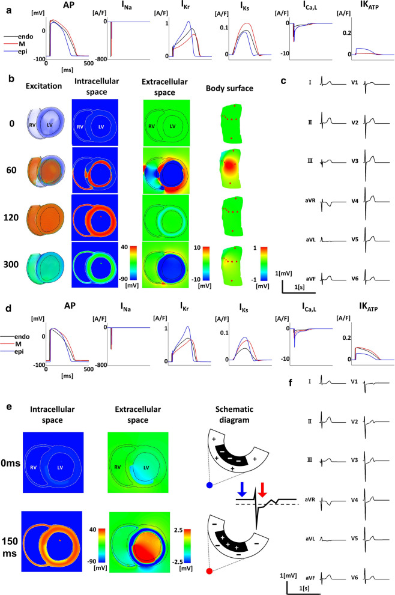
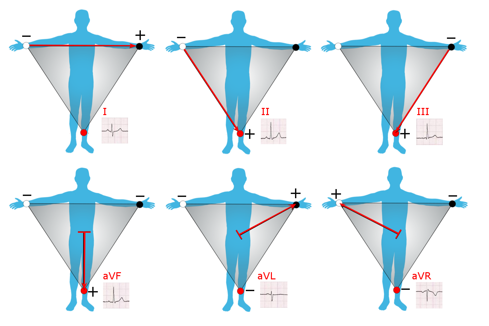
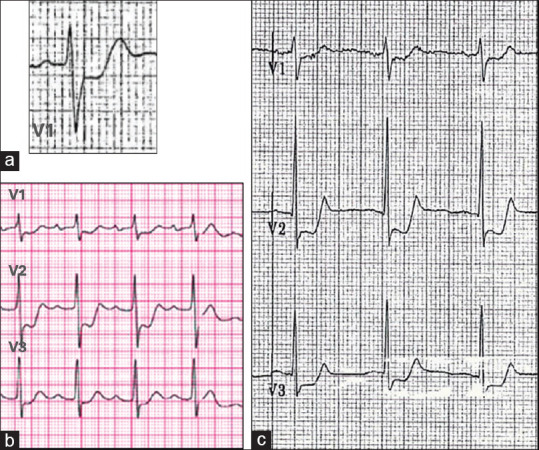
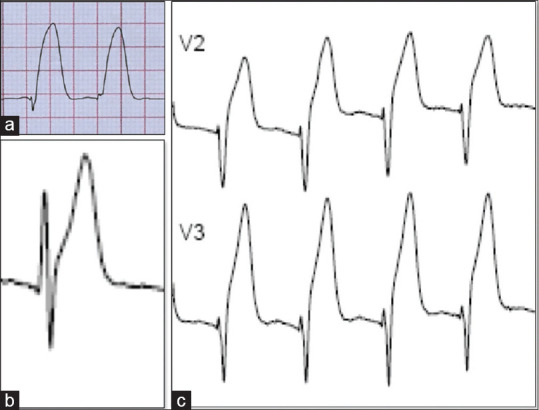
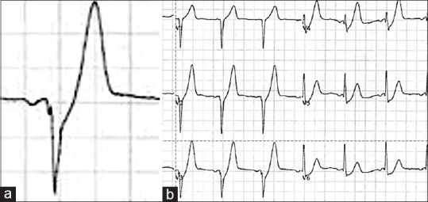
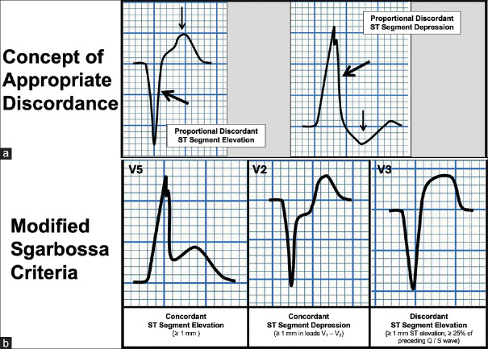
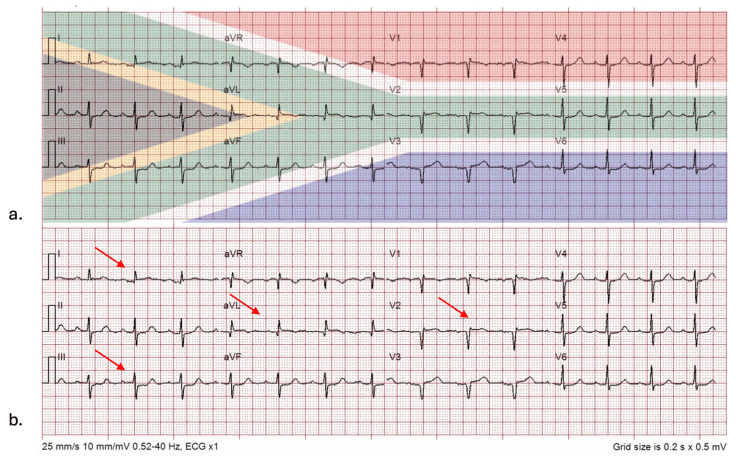

原理 Principle
它到底在量什麼？為什麼這個數字能反映那件事？
冠脈血流由心外膜往心內膜灌注，心內膜是灌流的最遠端。缺血讓細胞膜無法維持正常離子梯度，產生損傷電流，在心電圖上表現為 ST 段偏移；偏移的方向由缺血的深度決定，偏移出現在哪些導程由缺血的位置決定。
flowchart TD A["冠脈阻塞"] --> B["心肌缺血<br/>膜電位失衡"] B --> C["次全阻塞<br/>只傷心內膜下"] B --> D["完全阻塞<br/>全層受傷"] C --> E["ST 下降<br/>T 倒置"] D --> F["ST 上升<br/>對側導程對應下降"] A --> G["導程方向<br/>決定定位"] classDef key fill:#8e0000,stroke:#5f0000,color:#fff,font-weight:bold classDef mid fill:#263238,stroke:#000,color:#fff,font-weight:bold class F key class E,G mid

上半是正常傳導，下半是心內膜下缺血：缺血區造成細胞外電位差與 injury current，投影到體表後形成 ST–T 改變；圖中同時把心肌橫切面、電位分布、體表位置與 12 導程波形對上。Source: Okada et al., Cardiovasc Eng Technol 2020, Figure 2（CC BY 4.0）。
肢體導程的正極「視線」：I 看左側、II／III／aVF 看下壁、aVL 看高側壁、aVR 從右上方看心臟；ST injury vector 朝向正極時抬高、背離時下降。Source: Wikimedia Commons — Limb leads of EKG（CC BY-SA 4.0）。什麼時候做
- 當你想回答「這個病人現在有沒有急性冠脈完全阻塞」時 → 立刻、10 分鐘內
- 當病人有胸痛、上腹痛、新發呼吸困難、不明原因冒冷汗、暈厥、心搏過速或不明原因低血壓時
- 當症狀持續而第一張正常時 → 重複做（單張正常不能排除）
- 當疑似後壁或右心室梗塞時 → 加做 V7–V9 與 V4R
怎麼做 / 病人準備
| 項目 | 內容 |
|---|---|
| 標準 12 導程 | 電極位置錯誤是假陽性／假陰性的常見來源，尤其 V1–V2 貼太高會製造假的 ST 上升與 Brugada 樣型態 |
| V7–V9（後壁） | V7 左後腋線、V8 左肩胛骨中線、V9 左脊椎旁，與 V6 同高。閾值 ≥0.5 mm（男 <40 歲 ≥1 mm） |
| V4R（右心室） | 右鎖骨中線第 5 肋間。下壁梗塞一律要看 |
| 記錄時機 | 記下「做這張時病人痛不痛」——Wellens 只在不痛時看得到，動態變化只有在比對時才有意義 |
| 舊 EKG | 判斷 LBBB／Q 波／ST 上升是否為「新的」，這一步常決定要不要進導管室 |
判讀
① 梗塞定位與犯罪血管
| 導程群 | 部位 | 常見犯罪血管 | 要特別做什麼 |
|---|---|---|---|
| II, III, aVF | 下壁 | RCA（約 8 成）或 LCx | III 上升 > II 且 I／aVL 對應性下降 → 傾向 RCA。必看 V4R，並警覺心搏過緩與 AV block |
| V1–V2 | 中膈 | LAD 近端中膈枝 | — |
| V3–V4 | 前壁 | LAD | — |
| V5–V6 | 心尖／低側壁 | LAD 遠端或 LCx | — |
| I, aVL | 高側壁 | LCx 或第一對角枝 | 型態可以很不明顯，看 III 有沒有對應性下降 |
| V1–V4 全部 ＋ I／aVL | 前壁廣泛 | LAD 近端 | 面積大、易休克與心衰 |
| V1–V3 ST 下降＋高 R 波 | 後壁（鏡像） | LCx 或 RCA | 必做 V7–V9（見下方 equivalent） |
| V1 上升（V1 > V2）或 V4R 上升 | 右心室 | RCA 近端 | 幾乎都伴下壁梗塞。禁硝酸鹽（見禁忌表） |
| aVR 上升 ＋ 廣泛 ST 下降 | 左主幹／三條血管／廣泛心內膜下缺血 | LM、LAD 近端或 3VD | 高風險，但不是 STEMI equivalent（見下方） |
② 演變時序
| 階段 | 型態 |
|---|---|
| 數分鐘–數十分鐘 | Hyperacute T wave（寬、對稱、底寬的高 T）——比 ST 上升更早 |
| 數十分鐘–數小時 | ST 段上升，對側導程出現對應性下降 |
| 數小時–數天 | R 波振幅下降，病理性 Q 波出現，ST 開始回落 |
| 數天 | ST 回到基線，T 波倒置 |
| 數週–數月 | Q 波多半永久留下；T 倒置可持續或恢復。ST 持續不回落 → 想左心室膨大 |
③ STEMI equivalent —— 不符合 mm 閾值，但要當 STEMI 處理
| 型態 | 心電圖長相 | 意義／犯罪血管 | 處置 |
|---|---|---|---|
| 後壁梗塞（posterior OMI） | V1–V3 水平型 ST 下降 ≥0.5 mm（V2–V3 最深）＋ 高／寬 R 波 ＋ 直立的 T 波 | LCx 或 RCA；標準 12 導程只看到「鏡像」 | 加做 V7–V9（≥0.5 mm 上升確認）→ 當 STEMI 處理 |
| Hyperacute T wave | 寬、對稱、底部寬「胖」的高聳 T 波，QT 稍長，先於 ST 上升出現 | 最早期的完全阻塞 | 與高血鉀的「窄、尖、帳篷狀」T 波分開 → serial EKG，別放回家 |
| de Winter pattern | V1–V6 自 J 點起的上斜型 ST 下降 1–3 mm ＋ 高聳對稱 T 波，常伴 aVR 輕度上升 | LAD 近端完全阻塞 | 直接當 STEMI 啟動導管室 |
| LBBB 或心室節律起搏 | 不能只憑 LBBB。用 modified（Smith）Sgarbossa，符合任一條即可： ① 任一導程同向 ST 上升 ≥1 mm ② V1–V3 任一導程同向 ST 下降 ≥1 mm ③ 任一導程同時滿足：反向 ST 上升 ≥1 mm 且 ST/S ≤ −0.25 |
符合 → 急性阻塞 | 當 STEMI 處理 |
| 高側壁梗塞（South African flag sign） | I、aVL、V2 輕微 ST 上升 ＋ III 對應性 ST 下降（三處在心電圖上排成南非國旗的形狀） | 第一對角枝；幅度小、最容易被漏 | 拿 III 當對照；符合就當 STEMI 啟動 |
| Aslanger pattern | 只有 III 有 ST 上升（II 與 aVF 沒有）＋ V4–V6 任一 ST 下降且 T 波正向 ＋ V1 的 ST 高於 V2 | 下壁 OMI 合併多條血管病變；不符合「≥2 個相鄰導程」所以會被漏 | 當 STEMI 處理 |

後壁 MI 的鏡像：V1–V3 出現水平 ST depression、異常高 R 與正向 T；把紙面前後翻轉去想，就會變成後壁的 ST elevation／Q wave。
Hyperacute T：T 波基底寬、體積大且與 QRS 不成比例，常伴 J point 輕度上移；重點不是只看「高」，而是看肥厚、對稱性與局部導程分布。
De Winter：胸前導程 J point 下降，接著呈上斜型 ST depression 並銜接高聳對稱 T 波，常伴 aVR 輕度上升。
LBBB／paced rhythm：下排依序示範 concordant STE、V1–V3 concordant STD，以及過度 discordant STE；modified Sgarbossa 用ST/S ≤ −0.25 判斷第三型，不再只用固定 5 mm。以上四圖 Source: Mattu et al., Turk J Emerg Med 2025, Figures 1–3, 5（CC BY-NC-SA 4.0）。

South African flag sign：I、aVL、V2 的 ST elevation，加上 III 的 reciprocal ST depression；上圖把國旗斜帶疊在相應導程，下圖紅箭頭標出實際偏移。Source: Cohen et al., Cureus 2025, Figure 1（CC BY 4.0）。④ STEMI mimics —— 有 ST 上升，但不是急性阻塞
| 型態 | 心電圖長相 | 怎麼分開 |
|---|---|---|
| 良性早期再極化（BER） | 年輕健康人；V2–V5 凹型 ST 上升、J 點有 notch／slur、T 波高聳但比例協調、不演變 | serial EKG 不變；與 LAD 阻塞難分時用 Smith 4-variable formula |
| LVH | 高電壓、V1–V3 凹型 ST 上升伴深 S 波、側壁 ST 下降＋T 倒置 | 看電壓標準、無動態演變、比對舊 EKG |
| Pericarditis↗／心肌炎 | 廣泛凹型 ST 上升（不符合單一血管分佈）、PR 段下降、Spodick's sign（TP 段下斜）、V6 的 ST/T >0.25、無對應性 ST 下降（唯一例外是 aVR 與 V1，這兩個導程反而出現 ST 下降與 PR 上升） | 在其他導程看到對應性下降就要當 MI 處理；心肌炎 troponin 明顯升高 |
| Brugada pattern | V1–V2 rSR' ＋ 下斜型 ST 上升（Type 1 coved 型） | 問猝死家族史；確認 V1–V2 電極沒貼太高 |
| 高血鉀 | T 波窄、尖、帳篷狀、P 波變平、QRS 變寬，可造成 pseudo-STEMI | 立刻驗 K。與 hyperacute T 的「寬而胖」區分 |
| Takotsubo↗ | 前壁 ST 上升，接著出現深而廣泛的 T 倒置 ＋ QT 明顯延長；有壓力事件 | 冠脈通暢 ＋ 心尖球狀化；多半要靠導管與超音波才分得開 |
| 左心室膨大（舊梗塞） | 持續 ST 上升伴深 Q／QS 型、T 波無動態變化 | 比對舊 EKG；前壁 T／QRS 振幅比偏低傾向膨大 |
| Pulmonary embolism | V1–V4 T 倒置 ＋ III 導程異常（S1Q3T3）、右心負荷、心搏過速 | 少見真正 ST 上升；看低血氧與右心室擴大 |
⑤ 非 ST 上升的缺血型態
| 型態 | 意義 |
|---|---|
| 水平或下斜型 ST 下降 ≥0.5 mm | 心內膜下缺血；≥2 個相鄰導程有意義。若合併 aVR 上升 → 想左主幹／3VD |
| 對稱的 T 波倒置 ≥1 mm | 缺血；深而對稱的 T 倒置在 V2–V3 → 想 Wellens |
| 動態變化（同一病人前後張不同） | 比單張的絕對型態更有價值——這是 serial EKG 的全部意義 |
與相關檢查的取捨
| 檢查 | 回答什麼 | 什麼時候不夠用 |
|---|---|---|
| EKG | 「現在有沒有急性完全阻塞」——秒級、可重複 | 對非阻塞性缺血不敏感；LCx／後壁是沉默區；LBBB／起搏／LVH 會干擾判讀 |
| Troponin | 「心肌有沒有壞死」——但要 1 小時以上才有動態，且不告訴你阻塞在哪 | 不能用來決定「要不要現在進導管室」 |
| Echocardiography | 節段運動異常、EF、機械性併發症、mimics（Takotsubo、心包填塞、右心負荷） | 操作者依賴；小範圍缺血可能看不出來 |
| Coronary angiography↗ | 解剖 gold standard，且同時是治療 | 侵入性；不能拿來當篩檢 |
禁忌與陷阱
相關連結
- ACS — 看到這些型態之後要做什麼：分流決策樹與再灌流時間窗
- CAD — 名詞地圖與 MI 五個 Type
- Troponin — 另一條軸：心肌有沒有壞死
- Chest pain↗ — 主訴層的 can't-miss
- EKG↗ — 心電圖的系統性基礎讀法（尚未建立；建立後本篇應改為它的子題）
- Echocardiography、Coronary angiography↗、Pericarditis↗、Takotsubo↗